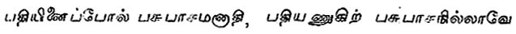
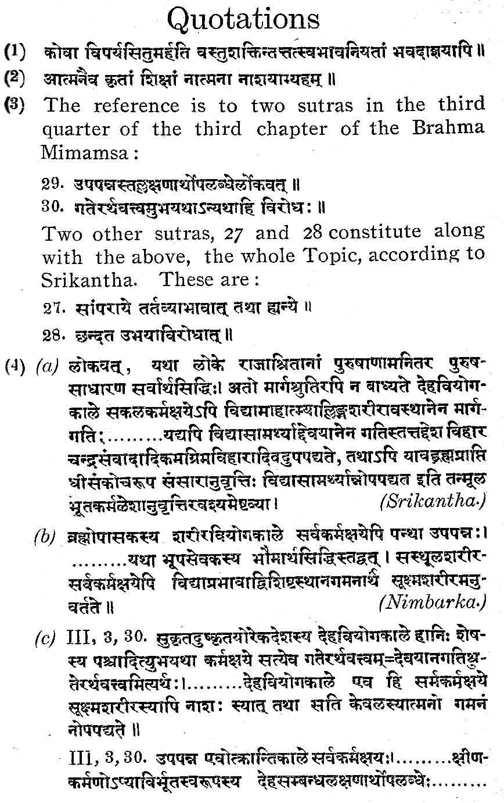
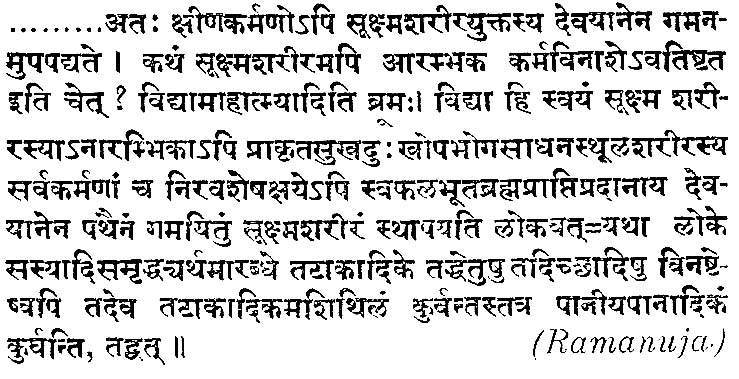

Divine Omnipotence:
A MEDIÆVAL VIEW
By S. S. SURYANARAYANA SASTRI
Speaking of the problem of evil and the notions that have contributed to obscure it and make it appear more difficult of solution than it perhaps really is, Prof. Pringle-Pattison draws special attention to "the stress laid on the idea of omnipotence and . . . the purely hedonistic character of the ideal contemplated." On the first of those he goes on to say that the will of God is conceived as "the will of a despot. And we must remember how closely the associations of oriental monarchy have bound themselves round the God-idea."1 Whether and how far this idea of despotic monarchy is oriental, it is for the historian to settle. But it is worth noting that atleast one Indian (and so far oriental) idea of God appears to make room for all the ethical content stressed by Prof. Pringle-Pattison showing itself as to that extent not affected by any ideas of political despotism. The main object of this paper is to present that philosophical idea as briefly as possible.
At least one variety of Indian theism comprising the schools of Saivism associated with the "Saiva Siddhanta," recognises what one may call the limitation of God by moral considerations. The view is common to the Vedanta also in so far as it is theistic. The latter states that God engages in creation, not for gaining any purpose of his own, but in sport; in so far as this sport entails suffering to others, it appears to involve cruelty and partiality of dispensation; but these defects are only apparent, since God in His dispensation is strictly guided by the accumulated merit and demerit of the souls who enjoy or suffer. He does not give them anything other than what they deserve. Nor is there any point in saying that prior to creation, there was no such distinction of desert, for creation did not take place at a particular time; it is beginningless. Whether such a notion is philosophically satisfactory is a different question. The non-dualistic schools of Indian philosophy, though based on the Vedanta, did not think so; they, therefore, treated these theistic notions as possessed of a degree of truth merely, (though a high degree of truth, no doubt), while the Supreme Reality is something inclusive of all this and yet transcending it, the One Changeless Brahman, of which all else are appearances. It has been contended with a great deal of logic and learning that one presentation of Saivite theism too (that of Nilakantha) recognises only the phenomenal worth of theistic ideas, of absolutism being the conclusion ultimately acceptable to that school of philosophy. However that may be, it is worth noting firstly that in so far as Absolutism is advocated at all, it is not because the notion of God is conceived in the first place or at any time as devoid of ethical content, and secondly that this ethical content, conceived even as a limitation, certainly characterises the theistic idea of the God head.
Saivism carries the idea to the extent of recognising three primal entities, the Lord, the Soul and the Bonds. The latter two are as beginningless (in time) as the first, though with the realisation of the Lord, the other two lose their militant individuality and disappear.2 One of the Bonds is Karma, the accumulated merit and demerit of the individual, whereby his experiences, good and bad, in this life are directed. Every act, good or bad, leaves its traces behind, and these traces cannot be wiped out except by enjoyment of the consequences. Once they have been enjoyed to the full, the individual becomes pure, just as copper covered with verdigris is purified by cleaning with dung. The sufferings of the Soul are inevitable, being but the consequences of former deeds; but they, at the same time, evidence the grace of God, who can elevate the soul only by such means of purification. It is not open to him to annul at will a law of the physical or moral realm.
This idea of limitation is very well presented by Haradattacharya (a Saivite propagandist who is said to have lived in the ninth century A. D. but who more probably belonged to the eleventh century A. D.) 3 and by Srikantha, otherwise known as Nilakantha Sivacharya, who wrote a commentary on the Vedanta sutras and about whose date, there are at least three widely divergent views. Haradattacharya in his Sruti-Sukti-Mala says: "Who, indeed, even if armed with the command of the Lord, can alter the potency of things, determined by their own nature ?" The point discussed is whether Siva can take on the form of Vishnu; 'no,' says the author, for the latter is born again and again of the womb, an experience necessitated in his case by the evil act of killing the wife of Bhrigu;4 such experience is not possible for Siva who is eternally free from sin. Siva, no doubt, is omnipotent, but this does not imply his freedom to set at nought the laws of the physical and the moral universe. This idea is further exemplified by the words put into the mouth of Siva by the Brahmanda Purana.
Vishnu, terrified at the curse laid on him by Bhrigu, performed severe austerities till Siva appeared to him well pleased and asked him what he desired. When, however, Vishnu requests to be released of the curse, Siva replies that he cannot annul the punishment a warded by himself (in the form of Bhrigu). Not even His supreme satisfaction with the austerities practised by Vishnu could avail to make him cancel the punishment, as such cancellation was not possible.
Two ideas stand out prominently: the first is that God is gracious, and the second is that the sufferings of humanity are only a means of manifesting His grace, since it is not competent even for Him to annul a single law-physical or moral. Srikantha's treatment of the latter point is worth noting in some detail. The question at issue is whether in the case of the person who has devoted himself to the Lord, the accumulated dispositions left by good and evil deeds (his Karma, good and bad) leave him at death or continue for a longer period. The doubt is due to two causes, firstly, the scriptural prescription of a path beginning with light, etc. (called the Path of the Gods, for short) at the end of which only, one realises Brahman, and secondly the mention in some texts of the crossing of the river Viraja, only on the accomplishment of which a man's good and evil deeds leave him. Some commentators like Madhva and Vallabhacharya take the relevant sutras to refer to a different topic. Sankara, Bhaskara, Ramanuja, Nimbarka, Spkantha and Vignana Bhikshu understand the reference to be to the topic above set forth. It is significant that of all these authorities Srikantha alone transposes the order of two of the sutras, -namely sutras 29 and 30. The significance of the variation will become apparent on a consideration of the whole topic which, as set out by Srikantha, covers the four sutras III, iii, 27-30. Three of these, 27, 28 and 29, set forth the prima facie view that since there is nothing further to be gained after death, the good and evil Karma leave a person when he dies. This of course applies only to him who by meditation on Brahman has qualified for realisation; in the case of others, this Karma endures through a succession of lives, until the souls become fit for the grace of God. Since a devotee of the kind mentioned is said to enter on the Path of the Gods and then realise Brahman, the shaking off of good and evil deeds must precede the entry on the Path. There is, however, a difficulty in understanding the progress along the Path of the Gods, in the absence of a body, for the gross body has ceased to exist and if there is no Karma left, there can be no body at all. This need not deter us, however, it is said, for devotion to Brahman by its own power is capable of endowing the soul with a subtle body and taking it along the Path. Others may not find it possible to acquire such a body or to adopt such a mode of progression, but special powers may be expected in a devotee of Brahman, just as special favours not given to others are gained by those who serve the king.
Srikantha refutes this position in sutra 30. If a man's Karma leaves him at death, he is liberated at that very moment. How then can it be said that he first passes along the Path of the Gods and then only realises Brahman? Meditation may indeed have the power of endowing the soul with all the pleasant experiences on the Path, such as the discussion with the moon and so on. But, of itself, it cannot explain samsara and until the intellect is expanded in the final realisation of Brahman, the soul with its understanding limited continues in a state of samsara, which cannot be explained except on the hypothesis that a residue of Karma continues even after death. This lasts till the crossing of the river Viraja, that is, in other words, till the full realisation of Siva who is the Supreme Lord, after crossing all the intermediate stages presided over by the lesser divinity, Vishnu.
There are then two stages, the one of bondage and the other of release; the former continues until the latter supervenes. And though the Lord may show grace in respect of the latter, he cannot cause or sustain bondage except through Karma. Nor is it of any avail to say that the following the Path may be due to the will of the Lord, for that will itself is said by us to be at the root of Karma. There is not indeed in one view any merit or i demerit except as determined by the will of the Lord as bringing about the performance of what is enjoined or forbidden.5 The Lord is free to act in the sense that He is not controlled by anyone else, but he must pay heed to the instruments that are to be used and the laws that they subserve. In the words of the Siddha-Guru quoted in the Sarva-Darsana-Samgraha, 'It belongs to independence to be uncontrolled and itself to employ means, etc., this is an agent's true independence and not the acting irrespectively of works, etc.6 The Saiva theist has as little sympathy as Prof. Pringle-Pattison with the "notion of outright creation" which "might give us a world of automata receiving their daily doles of pleasure, but could give us neither the minds nor the characters we know." 7
Srikantha's treatment of the sutras in question may incidentally serve to throw some light on the question of his date especially in relation to that of Ramanuja. There are undoubtedly numerous points of similarity, doctrinal and verbal, between the commentaries of these two. It has been suggested that Srikantha took over all these passages from Ramanuja;8 the other possibility of Ramanuja having borrowed from Srikantha has also been argued with great plausibility. The present context, which is a case not of resemblance, but difference, seems to be more definite in its indication. Srikantha's treatment of the whole topic is very precise and clear cut; the first three sutras (27, 28, and 29) set out a prima facie view which is refuted by Sutra 30.9 Bhaskara treats the whole topic as establishiug the siddhanta that good and bad deeds forsake the enlightened one at his death, the contrary view not being expressed at all. Sankara and Vijnana Bhikshu interpret sutras 29 and 30 as limiting the progress along the Path of the Gods only to a certain class of devotees; where attainment of the highest unity is intended, there is no preliminary going involved. The presence or absence of such going must be determined with reference to the person and the object; a road has to be taken to go to another village, but not to recover from sickness. A person who is free from desire and is thus non-moving does not go to Brahman but attains freedom by the intuition of the self. The interpretations of Madhva and Vallabha- charya have no bearing at all on the present topic. Nimbarka treats the whole topic as establishing the siddhanta in much the same way as Bahaskra, the difficulty about the absence of a body being mentioned and met in what is for him the last sutra, but is for Srikantha the penultimate one. The method of meeting the difficulty and the illustration thereof are just what are put into the mouth of the upholder of the prima facie view by Srikantha; the destruction of Karma along with the physical body need not stand in the way of progress along the Path of the Gods, for meditation on Brahman endows the individual by its own power with a subtle body. The illustration is that of the person who gains terrestrial welfare by the service of a king. As Srikantha is quite clearly criticising this view . and as no other known commentary (with the exception of the Sri-Bhashya of Ramanuja to which we shall turn presently) sets it forth as it is presented by Nimbarka, the conclusion that Srikantha succeeded Nimbarka would appear inevitable. And since the latter is generally supposed to have succeeded Ramanuja and preceded Madhva, it seems difficult to avoid the conclusion that Srikantha succeeded Ramanuja also.10
This conclusion is reinforced by a consideration of Ramanuja's own commentary. His final position is the same as that of Nimbarka, that the meditation of Brahman (Vidya) by its potency secures a subtle body for the devotee, where- with he proceeds on the Path of the Gods. The illustration given by him is, however, different. He is interested in proving that a body of some kind is possible even in the absence of Karma; and Vidya though by itself incapable of bringing a body into existence, is yet capable of conserving a body once created; Vidya then conserves the subtle body, even when the gross body and the Karma which caused it are destroyed. This is analogous to a tank originally dug for irrigation purposes continuing to exist and serve a different purpose, that of supplying drinking water. This is not the illustration noticed by Srikantha in his statement of the prima facie view. It cannot be concluded, therefore, that he either ignored the view or that he preceded Ramanuja; for he does notice Nimbarka's illustration and Nimbarka is believed to have succeeded Ramanuja.
And further, the argument used by Srikantha to support his own position is a sufficient answer to Ramanuja, though his illustration is not specifically dealt with. At the stage at which Srikantha tackles it, the question is no longer the necessity or the possibility of a body, subtle or gross. The whole idea of progression along a Path implies non-realisation of Brahman, i,e. in other words a state of bondage or samsara. Between bondage and release there cannot be a tertium quid. If release has been attained, there can be no further limitation of intellect such as is characteristic of progress along the Path; short of release, there is samsara, which cannot exist but for some residual traces of Karma. Whether there be a subtle body or not (and Srikantha does recognise the continuance of a subtle body) samsara does continue, until the end of the Path is reached and this can be explained only on the hypothesis that the whole of man's Karma does not abandon him when he dies.
There is yet another consideration for taking Srikantha to have succeeded Ramanuja. It has been already said that the numerous similarities between the two commentaries suggest that one of the two authors must have had access to the work of the other. If Ramanuja had been the borrower, it sounds exceedingly improbable that he would have passed by in silence the transposition of sutras 29 and 30 clearly effected by Srikantha without any known warrant. Such a departure from precedent is sure to have attracted the hostile attentions of Ramanuja, especially when it was used to bolster up a conclusion which found no favour with him.
And yet it must be admitted that the above arguments are by no means conclusive. Ramanuja's treatment of the topic is not as natural as even that of Srikantha. It begins with the siddhanta, states a prima facie view in the middle and then establishes the siddhanta again, a procedure which is certainly unusual. This would suggest the possibility of Ramanuja having been conscious of strong arguments for the prima facie view, and twisting the topic so as to make it meet that view. It has also to be noted that neither Sankara nor Bhaskara notices any objection to progress along, the Path, based on the absence of a body. So that it is not absolutely improbable that Ramanuja's treatment was devised to meet Srikantha's own position. This view, however, would have to find an explanation for the facts that Srikantha is a ware of the argument about a subtle body being secured by meditation on Brahman, that he himself seems to set no great store by the presence of a subtle body for the possibility of its being caused otherwise than by karma, and that Ramanuja's commentary contains no answer to .the real core of Srikantha's argument. that short of beatitude there is Samsara which cannot exist but for karma. All that could be inferred from Ramanuja's unusual handling of the topic is therefore that by his time some critics had fastened on the absence of a body as a sufficient objection to progression along the Path unless the continuance of Karma in some form was admitted and that Ramanuja realised the necessity for meeting their arguments. There is no room to think that Srikantha was one of those critics.
There is also another possibility to be considered. Similarities, even as strong as those in the present case, may be evidence, not of borrowing inter se, but of copying from a common source. Such a hypothesis would ordinarily be ruled out by the law of parsimony, but in view of the tradition that Ramanuja derived his inspiration from the Bodhayana Vritti on the Brahma Sutras (an ancient work now perhaps irretrievably lost) the suggestion comes within the bounds of possibility. Srikantha may also have drawn from Bodhayana, as Ramanuja did, with this possible difference that while Ramanuja remained faithful to the master throughout, Nilakantha ventured to disagree in some details. This may explain both the similarities and the divergences. In such a case we are left with no guidance as to Srikantha's date except that he must have come after Bodhayana. But till this Vritti or some manifestly satisfactory account of its doctrines comes to light, the hypothesis is bound to remain barren, though there can be no difficulty in finding a certain amount of material which harmonises with that suggestion better than with any other.11
The Sivajnanabodha, the corner-stone of the Saiva Siddhanta says that the union of souls with bondage (samsara) takes place at the will of the Lord, in conformity with the karma of the individuals (Karmnusaratha). The Tamil version of this work was produced by Meykanda whose date is roughly fixed at 1200 A. D. from a reference in a work by Umapati Siva who was fourth in the line of spiritual descent from Meykanda. The considerations discussed above would lead us to af5ign Srikantha also to much about the same period. It has also to he noted that in the religious literature of the period, Divine sway is conceived somewhat on the model of human sovereignty. So that, at about the time the barons of England were wresting from an unwilling monarch the recognition of elementary rights of person and property, we had in this country a conception of a Divine Ruler whose fiat was law, not as the arbitrary command of an "Oriental despot," but only as conforming to supreme ethical considerations. How far the conception of political monarchy also conformed to this ideal, it is for the historian to consider.
1 The Idea of God, 403.
2 Tiro-Mular says: 
3 The date of the death of this Saivite devotee is traditionally fixed at 879 A. D. in the light of an obituary verse, which states that he departed this life on a Friday which was the fifth day of the bright half of the month of Pushya of the cyclic year Vilambi and Kali-year 3979. Unfortunately, the fifth day of the bright half of the month of Pushya in that year happens to be a Thursday: while the fifth day of the dark half happens to be Friday. There is evidently an error either in the Kali-year, or in the other details given. In view of the fact that tithis are usually better remembered for the purpose of annual commemorations, it is permissible to assume that the mistake is in respect of the Kali-year. The nearest Vilambi satisfying the other details is 1119 A.D. (I am greatly obliged to Mr. S. R. Ranganathan, the University Librarian, for looking up and checking these details.)
4 The story may be set out here in some detail. Once upon a time, it is said the Asuras, hard pressed by Vishnu and Indra, took sanctuary in the hermitage of Bhrigu. Bhrigu's consort, who gave them shelter, promised them immunity from harm, the hermitage being a holy place. When Vishnu arrived on the scene, however, he would recognise no claims of sanctuary and since Bhrigu's wife insisted on sheltering the enemies of the Gods, he killed her with his discus. In thus killing a defenceless woman (and that, not even in battle), he committed a heinous sin. When Bhrigu returned to-his hermitage, his anger knew no bounds. Realising that nothing he could call down in the shape of vengeance would meet the situation, he invoked the Supreme Lord, the internal ruler, and in His name caused Vishnu to suffer the torments of hell in ten incarnations. This is the curse from which Vishnu sought relief by penance. Since the punishment had not been invoked to satisfy a particular will (that of Bhrigu) but in the name of the universal sustainer of law, Siva expresses his inability to remove the curse.
5 Brahma Mimamsa, III. iii. 30.
6Cowell and Gough's translation, II6.
7The Idea of God, 405.
8The most recent exposition of this view is in an article on "The Age of Srikantha" in the Journal of Oriental Research, Madras. The case against this position has been ably set forth in the jignyasa, I, part 2.
9The relevant passages from the commentaries of Srikantha, Nimbarka and Ramanuja are set out as 4 (a), (b) and (c), in the appended list of quotations.
10 See Prof. S. Radhakrishnan's Indian Philosophy, ii. 751. The same author assigns Srikantha to the 14th cenury A. D. without indicating any grounds for his view. The statement about Nimbarka agrees with the generally accepted view. Dr. V. S. Ghate believes that the date of Nimbarka's death is probably 1162 A. D. Pandit Vindhyeswari Prasad Dvivedin, the Editor of the Vedanta Parijata Saurabham, believes that Nimbarka must have lived some time between 1089 Vikrama Era and 1199 Vikrama Era, the reputed dates of Vishnu-Swamin and Madhvacharya, between whom Nimbarka is supposed to have come.
11 Dr. S. Krishnaswami Aiyangar's Manimekhalai, published since the above lines were written, adds to our knowledge of Bodhayana, vritti in the light of a reference thereto in the Prapancha hridaya (Trivandrum Sanskrit series, No. XLV). It appears fairly clear from this reference that Bodhayana wrote a vritti on both the Mimamsas,-which in his time seem to have been treated as constituting one sastra in two parts, not two different branches of knowledge-and that this commentary went by the name of Krtakoti, The present writer has not yet had an opportunity of seeing the work in question; and he does not know whether the antiquity and value of the work have been sufficiently tested. But it is worth noting that both Ramanuja and Srikantha affect to treat the Purva and Uthara Mimamsas as earlier and later parts of one science, possibly deriving the suggestion from Bodhayana's treatment. Here again, it is difficult to say whether the borrowing was direct in both cases or indirect in one of them. Ramanuja' treatment is, as usual, fuller. "Hence the earlier and later Mimamsa" he says, "are separate only in so far as there is a difference of matter to be taught by each; in the same way as the two halves of the Purva Mimamsa-Sutras, consisting of six adhyayas each, are separate; and as each adhyaya is separate" (Sacred Books of the East, vol. XLVIII, P.S). The same idea is expressed by Srikantha, who illustrates the use of athah in the Purva Mimamsa Sutras, to mark the commencement of a new chapter. Ramanuja goes on to elaborate his idea saying that all the knowledge from "then, therefore, the inquiry into religious duty" up to "for them there is no return, because of Scriptural statement," is one sastra, an idea found in Srikantha also, almost in the same words.
|
 |
|
 |